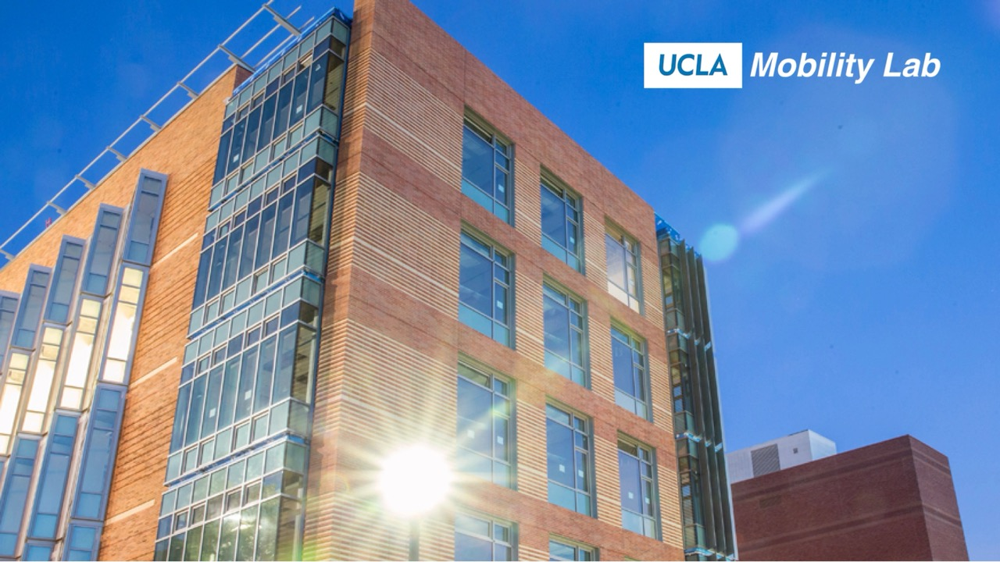

RESEARCH PARTNER
UCLA Mobility Lab
UCLA Institute of Transportation Studies · led by Assoc. Prof. Jiaqi Ma
AI, robotics, control theory and urban analytics for intelligent mobility and smart-city infrastructure, from sensor-rich Smart Intersections to the LA Sim agent-based simulator. We apply the same principles to buildings: distributed sensing, adaptive HVAC and lighting, and simulation.